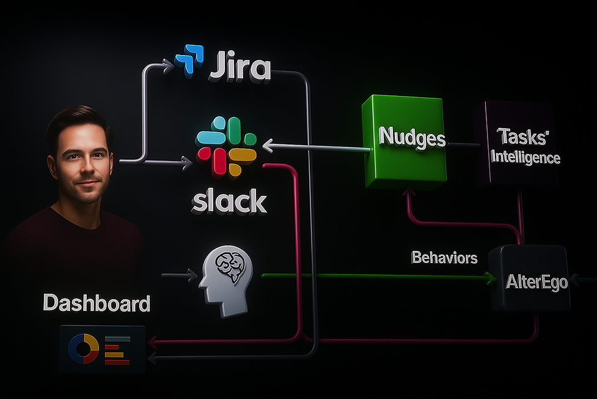

Vision
In a world run by agents, we protect what makes humans irreplaceable.
InFocus is building the execution layer for hybrid teams, where AI restructures work and humans drive the context and purpose.
Our behavioral AI learns how people work, then autonomously optimizes workflows and reactivates humans only where they matter most.